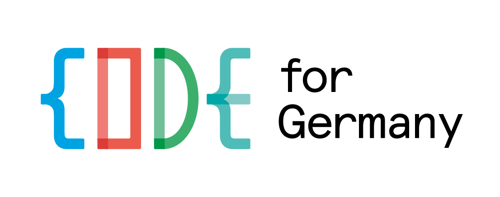
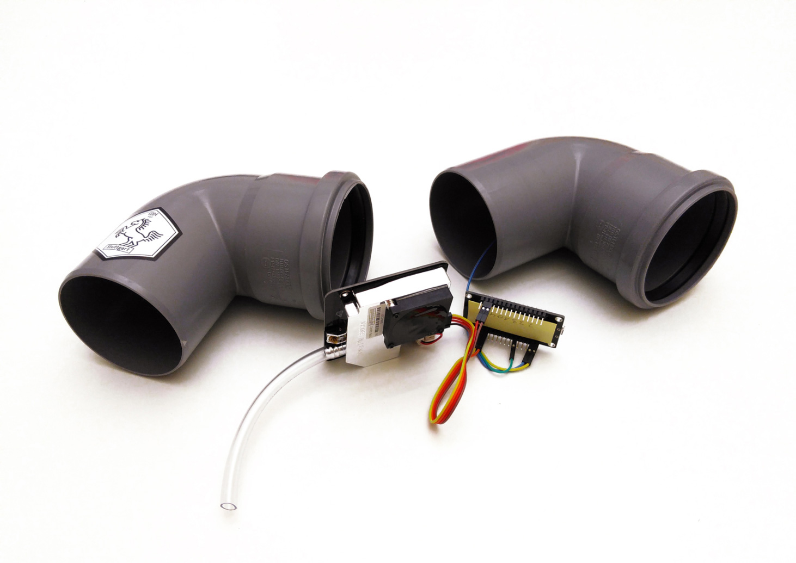
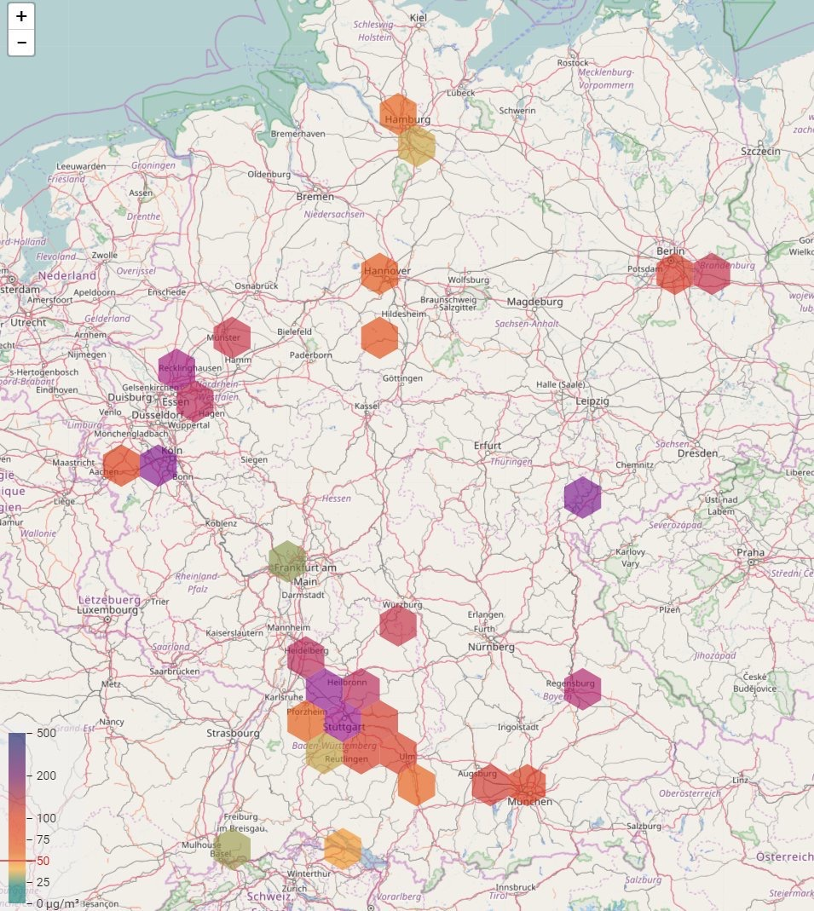
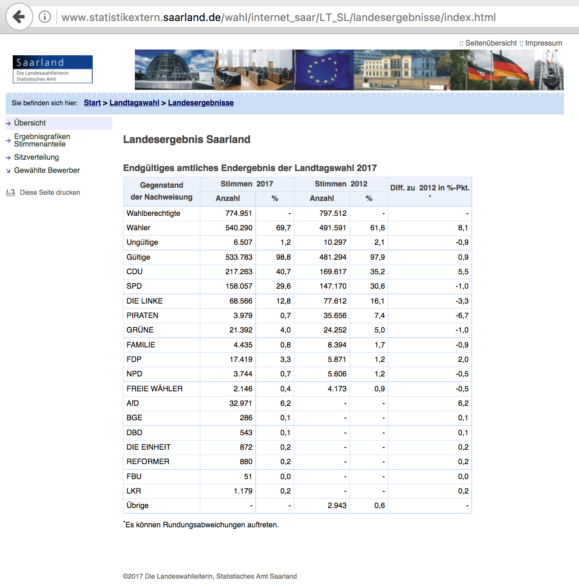
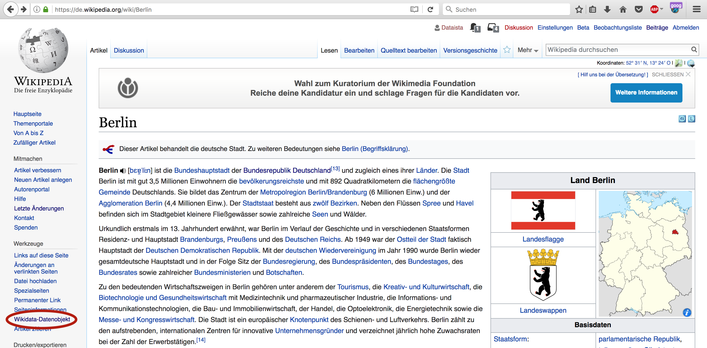
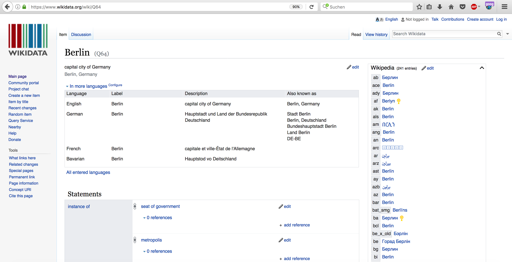
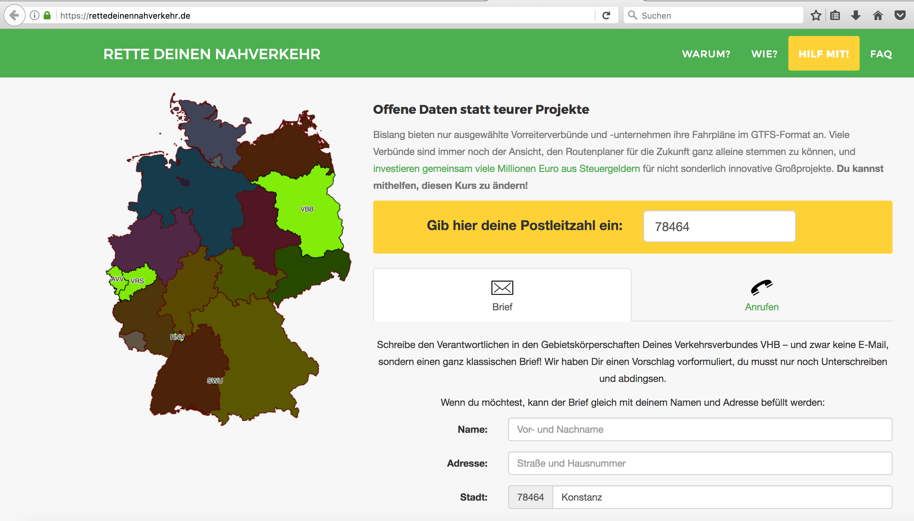

class: center, middle # Open Data Use Cases Ulrike Thalheim, OK Lab Berlin (<a href="https://codefor.de/berlin" target="_blank" style="text-decoration:none">www.codefor.berlin</a>) PyData Berlin Meetup April 19, 2017 ??? - Introduce myself: Political Science - quantitative focus - propensity scores - Co-Lab lead at OK Lab Berlin, spare time - iRights e.V. (improving consumer protection for migrants/refugees) - Market research at FactWorks --- # Agenda 1. Introduction 2. Measuring air quality 3. Election data 4. Wikidata 5. Public transport data 6. Outlook --- # 1. Introduction - OK Lab Berlin & Code for Germany since 2014 - Open data & Civic Tech <figure></figure> <figure></figure> ??? - OK Lab Berlin: - community - weekly Co-Working space, meet likeminded people - Wikimedia Berlin - Open Data & Civic Tech - Last year: focus on digitial solutions for refugee support and integration - 1 out of 26 OK Labs - German community - Code for DE - civic side of Open Data vs. government, administration, businesses, Think Tanks, journalism --- # 1. Introduction <b>Open Definition</b>, Open Knowledge Foundation, 2006: <blockquote><em>"Open data and content can be freely used, modified, and shared by anyone for any purpose."</em><br> <font size="4">Source: (<a href="http://opendefinition.org/" target="_blank" style="text-decoration:none">opendefinition.org</a>)</font></blockquote> <br> <b>Advantages of Open data</b>: - Transparency - Collaboration - Economy ??? - Open Data Definition: - Open data and content can be freely used, modified, and shared by anyone for any purpose ("Open Definition 2006") - free license - machine-readable (no pdfs!) - Advantages: - Transparency - fosters collaboration between different parties - Economic potential (KAS: economic potential = 41.3 billions, for Germany, yearly) - Types of data - weather data - data on schools and Kindergarten - Christmas markets - Real-estate data --- # 2. Measuring air quality - Fine dust / particulates - PM10: particles with a diameter between 2.5 and 10 micrometres (μm) - EU on PM10: - Yearly average: 40 µg/m<sup>3</sup> - Daily average: 50 µg/m<sup>3</sup> - Allowed number of exceedences per year: 35 - exceeding days 2016 - Berlin: 18 - Stuttart 2016: 58 ??? - Research three facts - def: microscopic solid or liquid matter suspended in the Earth's atmosphere - increasing lung cancer rates or asthma - dependent on weather and geography --- # 2. Measuring air quality  <div style="text-align:center">(Source: <a href="http://luftdaten.info/" target="_blank" style="text-decoration:none">www.luftdaten.info</a>)<br> OK Lab Stuttgart / @codeforS</div> ??? - build your own PM 10 sensor for your balcony - measures every few minutes - components ordered via Alibaba, 35€ - civic approach to smart city --- # 2. Measuring air quality  <div style="text-align:center">(Source: <a href="http://deutschland.maps.luftdaten.info/" target="_blank" style="text-decoration:none">www.deutschland.maps.luftdaten.info</a>, January 23, 2017)</div> ??? - Have a live view into the map - more granular data than Bundesumweltamt - Berlin: Fahrradfreundliches Neukölln, in cooperation with OK Lab Berlin --- # 3. Election data  <div style="text-align:center">(Source: <a href="http://www.statistikextern.saarland.de/wahl/internet_saar/LT_SL/landesergebnisse/index.html" target="_blank" style="text-decoration:none">www.statistikextern.saarland.de/wahl/internet_saar</a>)</div> ??? - best source should be Ämter but they are not - partially not informative - example: Saarland -> no downloads, no information on electoral system ... - many data sets not open - some data available after paying for a disc - Berlin 2016: information on how to vote available only simple language pdf (but better display + downloads) - large differences in the offerings of different Länder --- # 3. Election data ###"Wahldaten" - Bundestagswahl September 2017 - make more data sets available - spotlight official websites + best practices - develop apps - "Wahlsalons" - Organizer: Code for Germany (<a href="https://codefor.de" target="_blank" style="text-decoration:none">www.codefor.de</a>) ??? - bring together various interest groups: <br> data journalists, coders, Statistische Ämter, activists (Abgeordnetenwatch), scientists ... - issue: federal system --- # 4. Wikidata  <div style="text-align:center">(Source: <a href="https://de.wikipedia.org/wiki/Berlin" target="_blank" style="text-decoration:none">de.wikipedia.org/wiki/Berlin</a>)</div> ??? - another community project - --- # 4. Wikidata  <div style="text-align:center">(Source: <a href="https://www.wikidata.org/wiki/Q64" target="_blank" style="text-decoration:none">www.wikidata.org/wiki/Q64</a>)</div> ??? - another community project - --- # 4. Wikidata - Entry, linkage and usage - SPARQL-queries: <a href="https://query.wikidata.org/" target="_blank" style="text-decoration:none">www.query.wikidata.org</a> - building applications: <a href="http://stadt-land-wikidata.netlify.com/" target="_blank" style="text-decoration:none">www.stadt-land-wikidata.netlify.com</a> ??? - Show Knuts Stadt Land Fluss - ask Lea for support - query directly via python with SPARQL and handle the data with python --- # 5. Public transport data - Public transport associations & schedules - GTFS - pdf - Google and who else? ??? - General Transit Feed Specification (GTFS) - little competition: less fitting apps - less innovation (for businesses and society) - little combination of different transport means - machine readable - Berlin opens data since 2012 (first in Germany) --- # 5. Public transport data <div style="text-align:center"><a href="https://rettedeinennahverkehr.de" target="_blank" style="text-decoration:none">www.rettedeinennahverkehr.de</a></div>  ??? - apps benennen, denen Daten fehlen - obnoxious - activism - calling & writing - attention - in the end: profit for everyone --- # 6. Outlook - Berlin: E- government law in 2016 - Germany: Open Data Law: 2017? - Germany: Open Government Partnership ??? - institutional support - --- # 6. How to get involved - OK Lab Open Lab dates @Wikimedia (Hallesches Ufer) - May 8 - June 12 - www.meetup.com/OK-Lab-Berlin/ - Frag den Staat: <a href="https://fragdenstaat.de/" target="_blank" style="text-decoration:none">www.fragdenstaat.de</a> - Use Open data - Berlin: <a href="https://daten.berlin.de/" target="_blank" style="text-decoration:none">www.daten.berlin.de</a> - Germany: <a href="https://www.govdata.de/" target="_blank" style="text-decoration:none">www.govdata.de</a> ??? Talk to me afterwards! (see next slide for details) --- # Thanks! ulrike.thalheim@gmail.com Twitter: @codeforbe and @didumdida Open source technologies used for this presentation: <br> remark.js, Google fonts, Atom editor